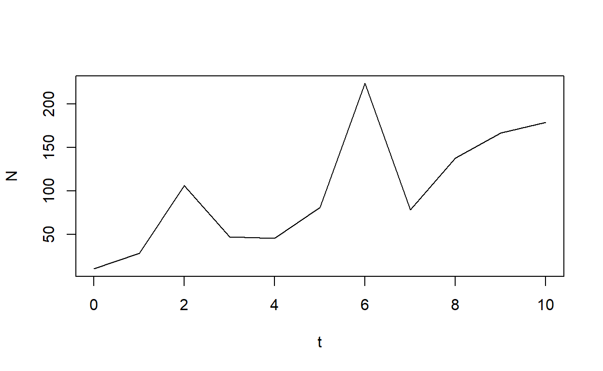
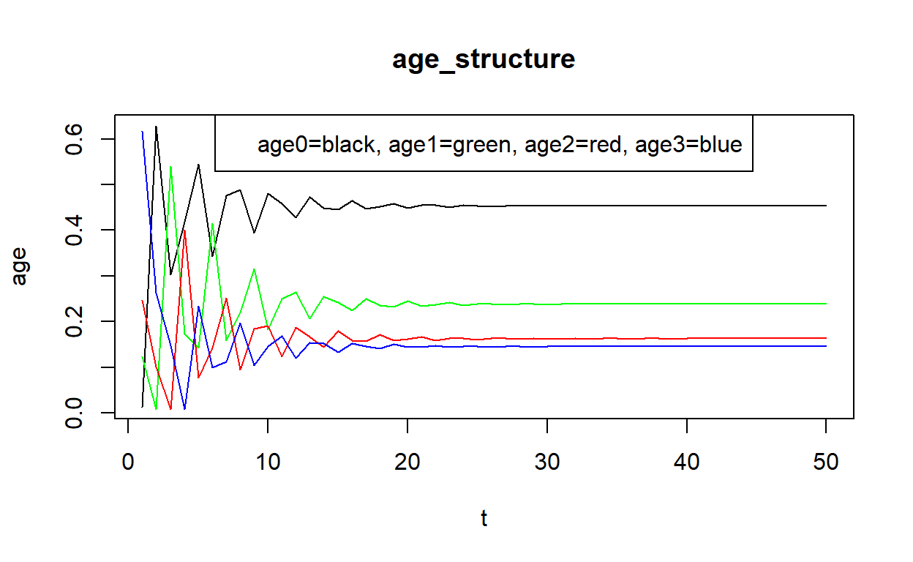
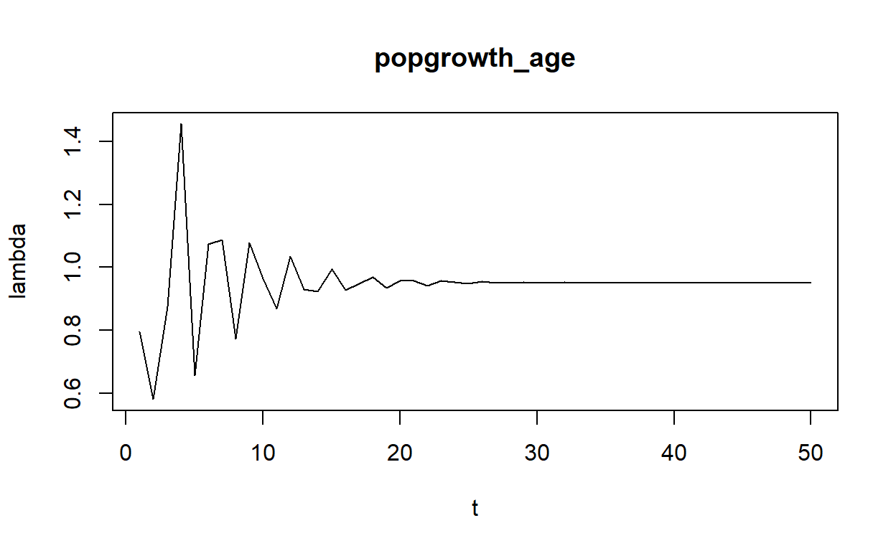

#exponential growth model
#initial population size
N0<-100
#population growth rate
r<-0.1
#years we are simulating
T<-10
#method 1: use the explicit formula directly
#first generate a list of time indices
t<-0:T
#now calculate N at each time
N<-N0*exp(r*t)
#make it pretty
data.frame(t=t,N=N)
t N
1 0 100.0000
2 1 110.5171
3 2 122.1403
4 3 134.9859
5 4 149.1825
6 5 164.8721
7 6 182.2119
8 7 201.3753
9 8 222.5541
10 9 245.9603
11 10 271.8282
plot(t,N,type="l")
N0<-100
r.mean<-0.10
r.sd<-0.30
r<-rnorm(T,r.mean,r.sd)
plot(density(r))
abline(v=r.mean,col="blue")
abline(v=r.mean+r.sd,col="blue",lty=2)
abline(v=r.mean-r.sd,col="blue",lty=2)
#now use this in place of the constant r
t<-N<-array(dim=T+1)
#first element is initial value
N[1]<-N0
t[1]<-0
for (i in 1:T)
{
N[i+1]<-N[i]*exp(r[i])
t[i+1]=t[i]+1
}
#make it pretty
data.frame(t=t,N=N)
t N
1 0 100.0000
2 1 155.0462
3 2 127.1783
4 3 208.2462
5 4 161.0638
6 5 249.5616
7 6 305.1056
8 7 515.8803
9 8 500.5317
10 9 670.0368
11 10 1096.1710
plot(t,N,type="l")
# N to be integer if we want.
N0<-10
r.mean<-0.0
r.sd<-0.8
r<-rnorm(T,r.mean,r.sd)
plot(density(r))
abline(v=r.mean,col="blue")
abline(v=r.mean+r.sd,col="blue",lty=2)
abline(v=r.mean-r.sd,col="blue",lty=2)
#now use this in place of the constant r
t<-N<-array(dim=T+1)
#first element is initial value
N[1]<-N0
t[1]<-0
for (i in 1:T)
{
N[i+1]<-round(N[i]*exp(r[i]),0)
print(N[i+1])
N[i+1]<-(N[i+1]>1)*N[i+1] #makes N= 0 if falls below 2
t[i+1]=t[i]+1
}
[1] 28
[1] 106
[1] 47
[1] 45
[1] 81
[1] 224
[1] 78
[1] 138
[1] 167
[1] 179
#make it pretty
data.frame(t=t,N=N)
t N
1 0 10
2 1 28
3 2 106
4 3 47
5 4 45
6 5 81
7 6 224
8 7 78
9 8 138
10 9 167
11 10 179
plot(t,N,type="l")
#continuous growth model
#parameters
T<-50
N0<-100
K<-500
rmax<-0.2
C<-K/N0-1
#first generate a list of time indices
t<-0:T
N<-K/(1+C*exp(-rmax*t))
#make it pretty
data.frame(t=t,N=N)
t N
1 0 100.0000
2 1 116.9612
3 2 135.8223
4 3 156.4824
5 4 178.7428
6 5 202.3048
7 6 226.7803
8 7 251.7132
9 8 276.6120
10 9 300.9880
11 10 324.3928
12 11 346.4493
13 12 366.8724
14 13 385.4770
15 14 402.1749
16 15 416.9626
17 16 429.9046
18 17 441.1143
19 18 450.7368
20 19 458.9332
21 20 465.8692
22 21 471.7060
23 22 476.5947
24 23 480.6734
25 24 484.0651
26 25 486.8778
27 26 489.2051
28 27 491.1271
29 28 492.7121
30 29 494.0173
31 30 495.0912
32 31 495.9738
33 32 496.6988
34 33 497.2940
35 34 497.7823
36 35 498.1829
37 36 498.5113
38 37 498.7805
39 38 499.0011
40 39 499.1819
41 40 499.3300
42 41 499.4513
43 42 499.5507
44 43 499.6321
45 44 499.6987
46 45 499.7533
47 46 499.7980
48 47 499.8346
49 48 499.8646
50 49 499.8891
51 50 499.9092
plot(t,N,type="l")
####
T<-50
N0<-100
K<-500
rmax<-0.2
t<-N<-array(dim=T+1)
#first element is initial value
N[1]<-N0
t[1]<-0
for (i in 1:T)
{
N[i+1]<-N[i]+rmax*N[i]*(1-N[i]/K)
t[i+1]=t[i]+1
}
#make it pretty
data.frame(t=t,N=N)
t N
1 0 100.0000
2 1 116.0000
3 2 133.8176
4 3 153.4183
5 4 174.6870
6 5 197.4182
7 6 221.3123
8 7 245.9831
9 8 270.9766
10 9 295.8006
11 10 319.9616
12 11 343.0037
13 12 364.5438
14 13 384.2957
15 14 402.0816
16 15 417.8301
17 16 431.5633
18 17 443.3772
19 18 453.4193
20 19 461.8675
21 20 468.9124
22 21 474.7433
23 22 479.5395
24 23 483.4642
25 24 486.6620
26 25 489.2584
27 26 491.3606
28 27 493.0586
29 28 494.4276
30 29 495.5297
31 30 496.4157
32 31 497.1275
33 32 497.6987
34 33 498.1568
35 34 498.5241
36 35 498.8184
37 36 499.0542
38 37 499.2430
39 38 499.3941
40 39 499.5152
41 40 499.6120
42 41 499.6896
43 42 499.7516
44 43 499.8013
45 44 499.8410
46 45 499.8728
47 46 499.8982
48 47 499.9186
49 48 499.9349
50 49 499.9479
51 50 499.9583
plot(t,N,type="l")
T<-50
N0<-100
K<-500
rmax.mean<-0.2
rmax.sd<-0.2
rmax<-rnorm(T,rmax.mean,rmax.sd)
t<-N<-array(dim=T+1)
plot(density(rmax))
abline(v=rmax.mean,col="blue")
abline(v=rmax.mean+rmax.sd,col="blue",lty=2)
abline(v=rmax.mean-rmax.sd,col="blue",lty=2)
#first element is initial value
N[1]<-N0
t[1]<-0
for (i in 1:T)
{
N[i+1]<-N[i]+rmax[i]*N[i]*(1-N[i]/K)
t[i+1]=t[i]+1
}
#make it pretty
data.frame(t=t,N=N)
t N
1 0 100.0000
2 1 124.7018
3 2 121.5933
4 3 121.9152
5 4 148.2906
6 5 178.6601
7 6 179.3349
8 7 188.4918
9 8 209.1506
10 9 187.2846
11 10 186.6721
12 11 225.5796
13 12 229.3542
14 13 267.9778
15 14 263.6562
16 15 309.3847
17 16 328.6664
18 17 358.4736
19 18 359.8885
20 19 378.2000
21 20 424.8059
22 21 415.5731
23 22 425.7520
24 23 451.8402
25 24 461.3781
26 25 467.1660
27 26 475.4175
28 27 483.9266
29 28 487.2937
30 29 489.0022
31 30 490.9827
32 31 495.0585
33 32 497.8721
34 33 498.8169
35 34 499.1844
36 35 499.3648
37 36 499.2906
38 37 499.2808
39 38 499.2707
40 39 499.5416
41 40 499.5076
42 41 499.3013
43 42 499.3938
44 43 499.5328
45 44 499.5035
46 45 499.6338
47 46 499.7508
48 47 499.8368
49 48 499.8648
50 49 499.8605
51 50 499.9331
plot(t,N,type="l")
#instead of the above approaches we can model growth in terms of F and S directly
#as Poisson and Binomial processes
#AGE STRUCTURE
#Survival rates for four age classes
S=c(0.5,0.65,0.85,0)
#births for four age classes
b=c(0,1,2,0)
f=c(b[1]*S[1],b[2]*S[2],b[3]*S[3],b[4]*S[4])
A1=c(S[1],0,0,0)
A2=c(0,S[2],0,0)
A3=c(0,0,S[3],S[4])
A=rbind(f,A1,A2,A3)
A
[,1] [,2] [,3] [,4]
f 0.0 0.65 1.70 0
A1 0.5 0.00 0.00 0
A2 0.0 0.65 0.00 0
A3 0.0 0.00 0.85 0
years=50
#initial abundance vector
N=c(10,100,200,500)
N
[1] 10 100 200 500
#create empty vectors for age vector, time, population, individual ages, and growth rate
age=c()
t=c()
pop=c()
age0=c()
age1=c()
age2=c()
age3=c()
grow=c()
#for loop to simulate population under deterministic conditions
for (y in 1:max(years)){
t=append(t,y)
abund=sum(N)
pop=append(pop,abund)
for (i in 1:4){age[i]=N[i]/abund}
age0=append(age0,age[1])
age1=append(age1,age[2])
age2=append(age2,age[3])
age3=append(age3,age[4])
cat("year",y,"\n");
cat("Population",N,"\n");
cat("age structure",age,"\n");
N=A%*%N
grow=append(grow,sum(N)/abund)
cat("lambda",grow[y],"\n");
}
year 1
Population 10 100 200 500
age structure 0.01234568 0.1234568 0.2469136 0.617284
lambda 0.7962963
year 2
Population 405 5 65 170
age structure 0.627907 0.007751938 0.1007752 0.2635659
lambda 0.5810078
year 3
Population 113.75 202.5 3.25 55.25
age structure 0.3035357 0.5403602 0.008672448 0.1474316
lambda 0.8763509
year 4
Population 137.15 56.875 131.625 2.7625
age structure 0.417615 0.1731816 0.4007917 0.008411677
lambda 1.455962
year 5
Population 260.7312 68.575 36.96875 111.8812
age structure 0.5452846 0.1434155 0.07731521 0.2339847
lambda 0.6562362
year 6
Population 107.4206 130.3656 44.57375 31.42344
age structure 0.34234 0.4154637 0.1420526 0.1001437
lambda 1.073507
year 7
Population 160.513 53.71031 84.73766 37.88769
age structure 0.4765137 0.1594494 0.25156 0.1124769
lambda 1.087019
year 8
Population 178.9657 80.25652 34.9117 72.02701
age structure 0.4887624 0.2191837 0.09534524 0.1967086
lambda 0.7724504
year 9
Population 111.5166 89.48286 52.16674 29.67495
age structure 0.394273 0.3163714 0.1844383 0.1049174
lambda 1.078737
year 10
Population 146.8473 55.75832 58.16386 44.34172
age structure 0.4812911 0.1827475 0.1906317 0.1453297
lambda 0.9643281
year 11
Population 135.1215 73.42365 36.2429 49.43928
age structure 0.4592418 0.2495474 0.12318 0.1680309
lambda 0.8681414
year 12
Population 109.3383 67.56073 47.72538 30.80647
age structure 0.4280544 0.2644971 0.1868426 0.1206059
lambda 1.034322
year 13
Population 125.0476 54.66916 43.91448 40.56657
age structure 0.4733106 0.2069251 0.1662182 0.1535462
lambda 0.9295142
year 14
Population 110.1896 62.52381 35.53495 37.3273
age structure 0.4486991 0.254601 0.1447006 0.1519992
lambda 0.9243175
year 15
Population 101.0499 55.09478 40.64047 30.20471
age structure 0.4451736 0.2427191 0.1790409 0.1330663
lambda 0.994676
year 16
Population 104.9004 50.52495 35.81161 34.5444
age structure 0.4646106 0.2237782 0.1586119 0.1529994
lambda 0.9276772
year 17
Population 93.72095 52.45021 32.84122 30.43987
age structure 0.4474574 0.2504161 0.1567957 0.1453308
lambda 0.9490987
year 18
Population 89.9227 46.86047 34.09263 27.91503
age structure 0.4523483 0.2357275 0.1715 0.1404241
lambda 0.969945
year 19
Population 88.41679 44.96135 30.45931 28.97874
age structure 0.4585548 0.2331824 0.1579707 0.150292
lambda 0.9352399
year 20
Population 81.0057 44.20839 29.22488 25.89041
age structure 0.4492097 0.2451536 0.1620639 0.1435729
lambda 0.9565673
year 21
Population 78.41775 40.50285 28.73546 24.84115
age structure 0.454603 0.2348029 0.1665851 0.144009
lambda 0.9573372
year 22
Population 75.17713 39.20887 26.32685 24.42514
age structure 0.4552382 0.237431 0.1594234 0.1479074
lambda 0.9428089
year 23
Population 70.24142 37.58856 25.48577 22.37782
age structure 0.4511517 0.2414266 0.1636918 0.1437299
lambda 0.9568446
year 24
Population 67.75837 35.12071 24.43257 21.6629
age structure 0.4548319 0.2357497 0.164005 0.1454134
lambda 0.9521032
year 25
Population 64.36382 33.87919 22.82846 20.76768
age structure 0.4537804 0.2388564 0.1609461 0.1464171
lambda 0.9478161
year 26
Population 60.82985 32.18191 22.02147 19.40419
age structure 0.4524771 0.2393821 0.1638046 0.1443362
lambda 0.955137
year 27
Population 58.35474 30.41493 20.91824 18.71825
age structure 0.4544544 0.236865 0.1629068 0.1457738
lambda 0.9505642
year 28
Population 55.33072 29.17737 19.7697 17.78051
age structure 0.4533138 0.2390446 0.1619693 0.1456722
lambda 0.9504367
year 29
Population 52.57379 27.66536 18.96529 16.80425
age structure 0.4531884 0.2384766 0.1634817 0.1448534
lambda 0.953492
year 30
Population 50.22348 26.28689 17.98248 16.1205
age structure 0.4540454 0.2376467 0.1625706 0.1457374
lambda 0.9505184
year 31
Population 47.6567 25.11174 17.08648 15.28511
age structure 0.4532689 0.2388409 0.1625117 0.1453786
lambda 0.9515323
year 32
Population 45.36965 23.82835 16.32263 14.52351
age structure 0.4534963 0.2381784 0.1631543 0.145171
lambda 0.9524235
year 33
Population 43.2369 22.68482 15.48843 13.87424
age structure 0.4537669 0.2380749 0.1625495 0.1456087
lambda 0.950882
year 34
Population 41.07546 21.61845 14.74514 13.16516
age structure 0.4533505 0.2386031 0.1627423 0.1453041
lambda 0.9518521
year 35
Population 39.11872 20.53773 14.05199 12.53337
age structure 0.4535935 0.2381412 0.1629371 0.1453282
lambda 0.95187
year 36
Population 37.23791 19.55936 13.34953 11.94419
age structure 0.4536175 0.2382644 0.1626186 0.1454994
lambda 0.95123
year 37
Population 35.40778 18.61896 12.71358 11.3471
age structure 0.4534377 0.2384373 0.1628122 0.1453127
lambda 0.9518585
year 38
Population 33.71542 17.70389 12.10232 10.80655
age structure 0.4536021 0.2381854 0.1628228 0.1453896
lambda 0.9516403
year 39
Population 32.08147 16.85771 11.50753 10.28697
age structure 0.453553 0.2383265 0.1626881 0.1454325
lambda 0.9514555
year 40
Population 30.52031 16.04074 10.95751 9.781399
age structure 0.4534967 0.2383469 0.162816 0.1453403
lambda 0.9517802
year 41
Population 29.05425 15.26015 10.42648 9.313884
age structure 0.4535845 0.2382361 0.1627745 0.145405
lambda 0.951574
year 42
Population 27.64411 14.52712 9.9191 8.862507
age structure 0.4535328 0.2383338 0.162734 0.1453994
lambda 0.951572
year 43
Population 26.3051 13.82206 9.44263 8.431235
age structure 0.4535282 0.2383071 0.1628011 0.1453636
lambda 0.9517062
year 44
Population 25.03681 13.15255 8.984337 8.026236
age structure 0.4535659 0.2382711 0.1627599 0.145403
lambda 0.9515733
year 45
Population 23.82253 12.5184 8.549157 7.636687
age structure 0.4535312 0.2383242 0.1627581 0.1453865
lambda 0.9516202
year 46
Population 22.67053 11.91127 8.136963 7.266784
age structure 0.4535418 0.2382942 0.1627863 0.1453777
lambda 0.9516585
year 47
Population 21.57516 11.33527 7.742322 6.916418
age structure 0.4535535 0.2382902 0.1627593 0.1453971
lambda 0.9515901
year 48
Population 20.52987 10.78758 7.367922 6.580974
age structure 0.453535 0.2383135 0.1627682 0.1453834
lambda 0.9516339
year 49
Population 19.53739 10.26494 7.011927 6.262734
age structure 0.453546 0.2382928 0.1627766 0.1453847
lambda 0.9516339
year 50
Population 18.59248 9.768697 6.672208 5.960138
age structure 0.4535468 0.2382985 0.1627625 0.1453922
lambda 0.9516058
plot(t,pop,xlab="t",ylab="N",main="Popsize",type="l")
#savePlot(filename="Popsize",type="png")
#win.graph()
plot(t,age0,xlab="t",ylab="age",main="age_structure",type="l")
lines(t,age1,col="green")
lines(t,age2,col="red")
lines(t,age3,col="blue")
legend("top","age0=black, age1=green, age2=red, age3=blue")
#savePlot(filename="age_structure",type="png")
#win.graph()
plot(t,grow,xlab="t",ylab="lambda",main="popgrowth_age",type="l")
#savePlot(filename="popgrowth_age",type="png")